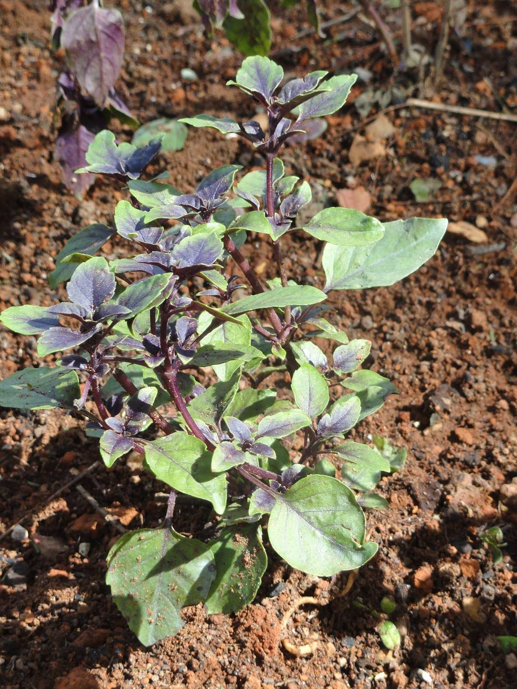
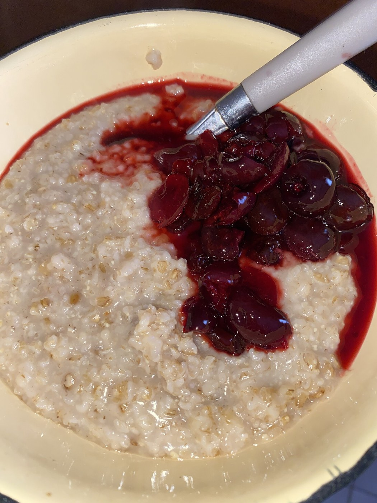

岐阜県土岐市・土岐市駅前のカフェ
世代も年齢も越えて、
ふらりと集える駅前の一席。
Cafe Albatrossは、世代や年齢を問わず人が集える場所を土岐市駅前につくりたい、という長年の想いから始まったカフェです。
お店の由来と想い
「集える場所を駅前に」という願いから。
紹介記事やお店のInstagramによると、Cafe Albatrossは2025年7月18日にオープン。「世代、年齢を問わず、人が集える場所を土岐市駅前に作りたい」という長年の思いからスタートしたプロジェクトとされています。JR土岐市駅から徒歩数分、メイン通りから少し入った路地にあります。
毎月1回、地域をつなぐ「ときしえきまえ子ども食堂」も開催されていると紹介されています。
岐阜県産・土岐市の食材を楽しめるカフェで、和牛100%のハンバーガー、自家製キッシュ、自家栽培のハーブやブルーベリーがあるとプロフィールに記されています。

情報源: 食べログ / Yahoo!ニュース(2025年の紹介記事) / Instagram
店名の意味は確認できていません。見出しなど上記の事実以外の言い回しは制作側の表現です。
メニュー・提供内容
肉も、畑のものも、甘いものも。
プロフィールで確認できた特徴は次のとおりです。営業時間・価格・詳細メニューは準備中です。
下の写真は雰囲気を伝えるフリー素材で、お店の料理そのものではありません。







口コミ(イメージ例)
こんなお声が聞けたら。
以下は制作側が作成したイメージ例で、実在のお客様の声ではありません。
イメージ例駅から近くて、仕事帰りにも立ち寄りやすそう。ゆっくり過ごせる席があるとうれしいです。
ご来店のお客様(例)
イメージ例ハンバーガーを食べたあと、デザートとコーヒーまで楽しみたい。そんな午後にぴったりです。
ご来店のお客様(例)
イメージ例家族で行ける雰囲気だと、子どもも一緒で安心です。地域の人が集まる場所があるのはいいですね。
ご来店のお客様(例)
アクセス
お店のご案内
| 所在地 | 〒509-5142 岐阜県土岐市泉町久尻2-1 コハクビル1階 |
|---|---|
| 電話 | 準備中 |
| 営業時間 | 準備中 |
| 定休日 | 準備中 |
| SNS | Instagram @cafe.alba2025 |
営業時間・価格は変更されることがあるため掲載せず「準備中」としています。最新情報はInstagramをご覧ください。